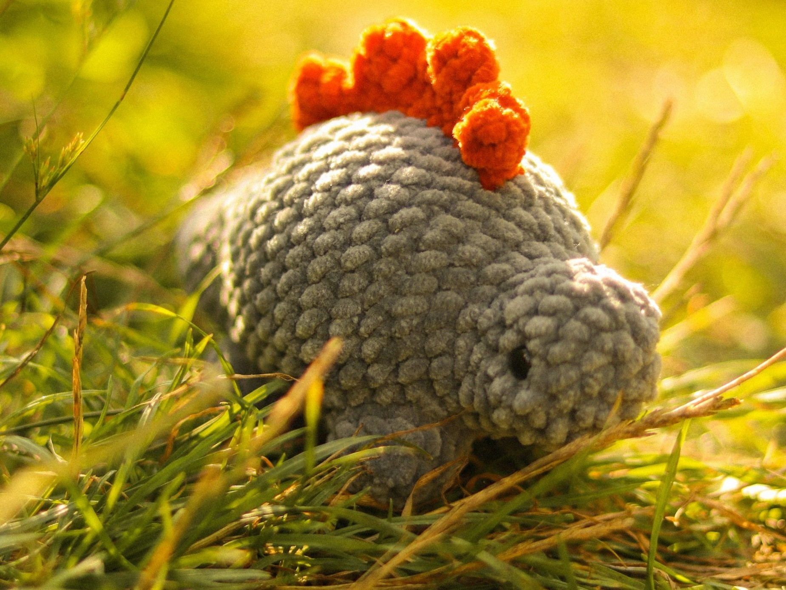

Crochet Position
To start off with your chain stitch, you'll need to get into crochet position. To do so, you'll have to hold your crochet hook in your right hand keeping your thumb on the same side as the front of the hook. Your pointer finger should rest on the backside of the hook. From there, take the start of your yarn, and wrap it once around your left hand pinky finger. It will then go across the top of your ring, middle, and index fingers. Pinch the hanging yarn with your middle finger, and thumb. You should now be in the crochet position.
Chain Stitch
Now that you have the correct positioning, we'll go onto how to form a chain stitch. You'll need to make a slipknot, a tutorial is linked below for guidance. Pinch the slipknot with your left hand middle finger, and thumb. Insert your crochet hook within the hole created by the slipknot. You'll take your hook, and go underneath the yarn that is to the right of it. Twist your hook to where it is holding that working yarn, and pull through hole. Keep repeating that process until it is the length you want it for your project.